Собирает данные из систем организации, приводит их к единому виду, строит отчётные витрины и даёт сотрудникам отчёты и ИИ-помощника — с контролем доступа и полным журналом действий.
Выпуск v1 · ноябрь 2026 · внутренняя разработка
Подключение, маппинг полей, таблицы, расписания и витрины — всё в интерфейсе. Таблицы создаёт сама система.
Загрузки идут сами по расписанию. После загрузки витрины пересобираются автоматически.
Понятные ошибки, повтор в один клик, журнал всех запусков и действий.
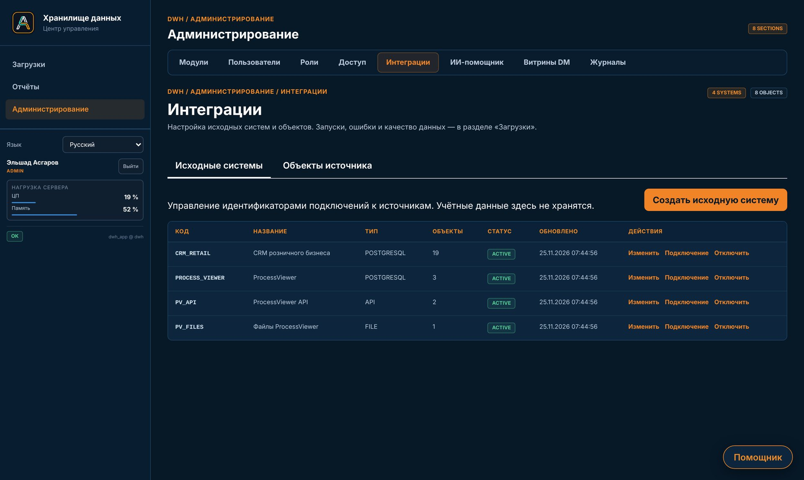
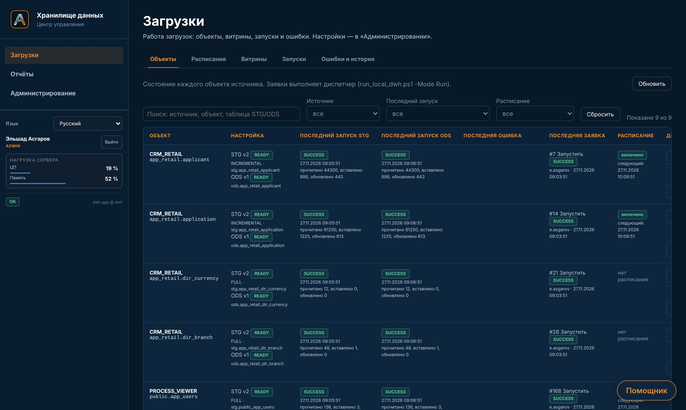
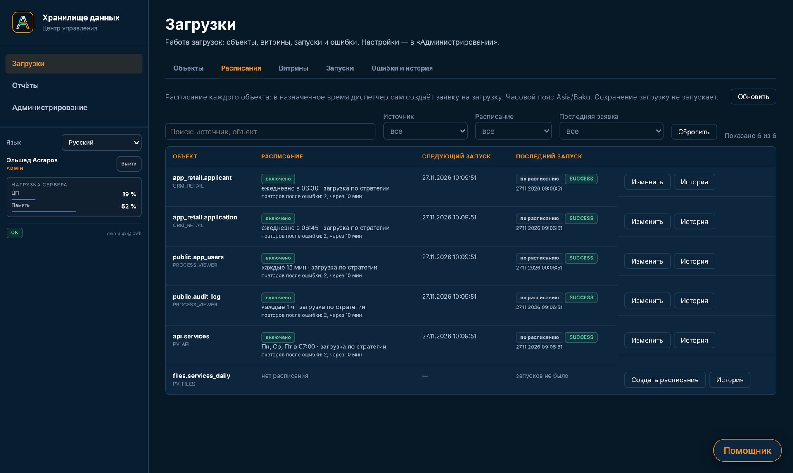
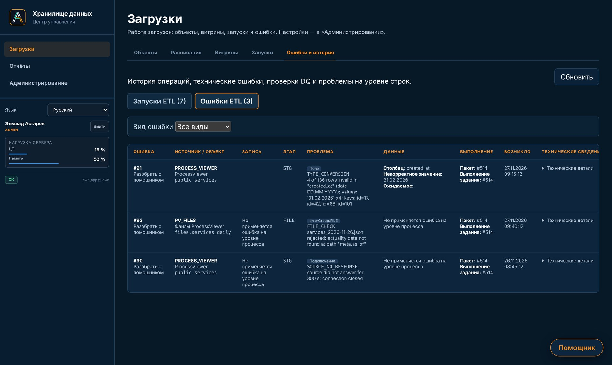
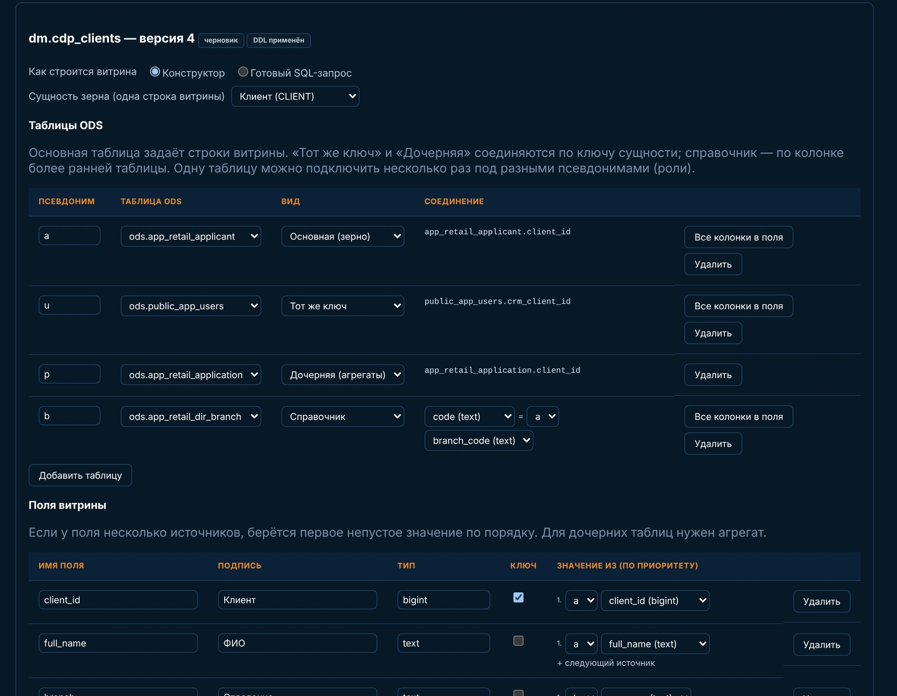
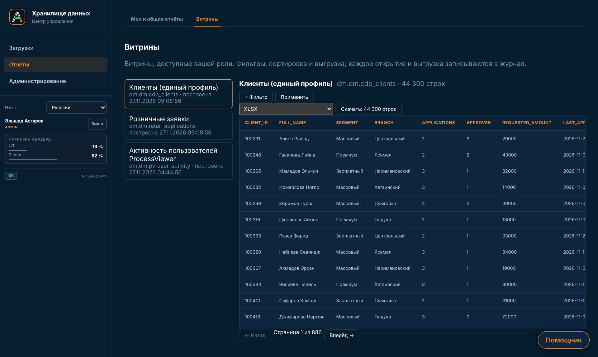
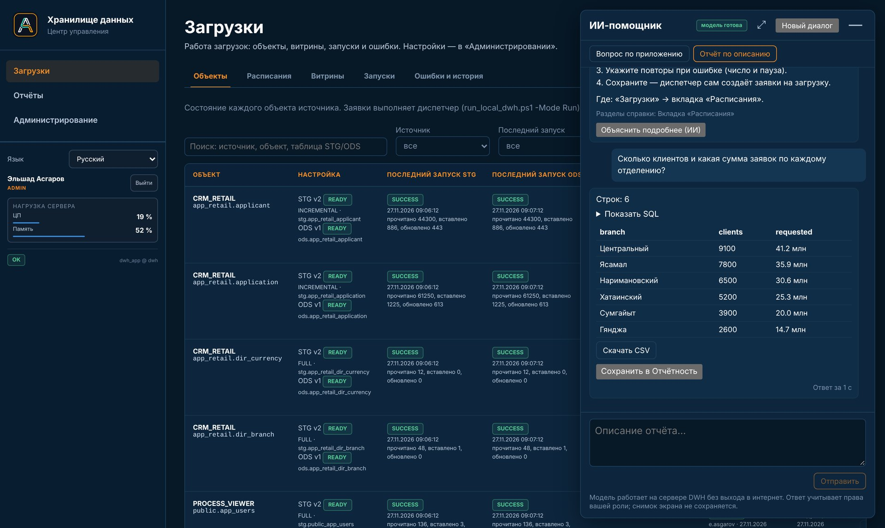
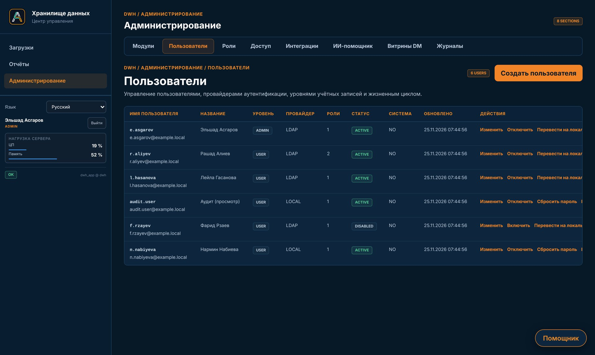
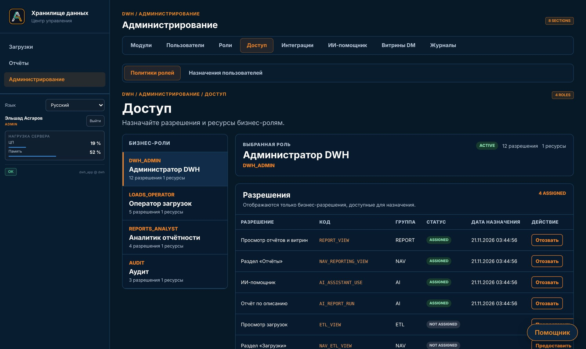
| Роль | Кому | Что доступно |
|---|---|---|
| Аналитик отчётности | Сотрудники бизнес-подразделений | Раздел «Отчёты», разрешённые витрины, выгрузка, ИИ-помощник и отчёты по описанию |
| Аудит | Внутренний контроль | Только просмотр витрин и общих отчётов |
| Оператор загрузок | Сопровождение | Раздел «Загрузки»: состояние, запуск, ошибки, расписания |
| Администратор DWH | Владелец системы | Источники, маппинг, витрины, пользователи и роли, журналы, нагрузка сервера |
Права проверяются дважды — в приложении и в самой базе данных. Даже администратор не может повысить себя до главного администратора.
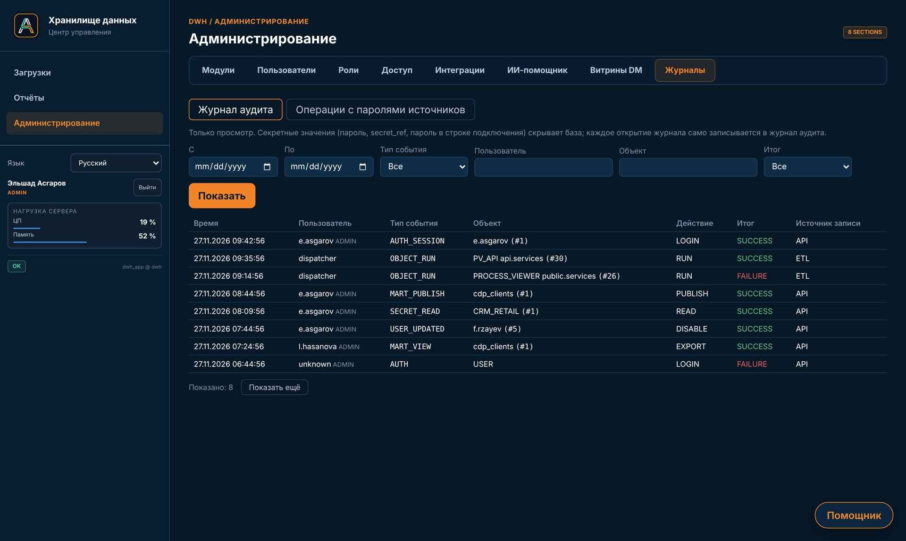
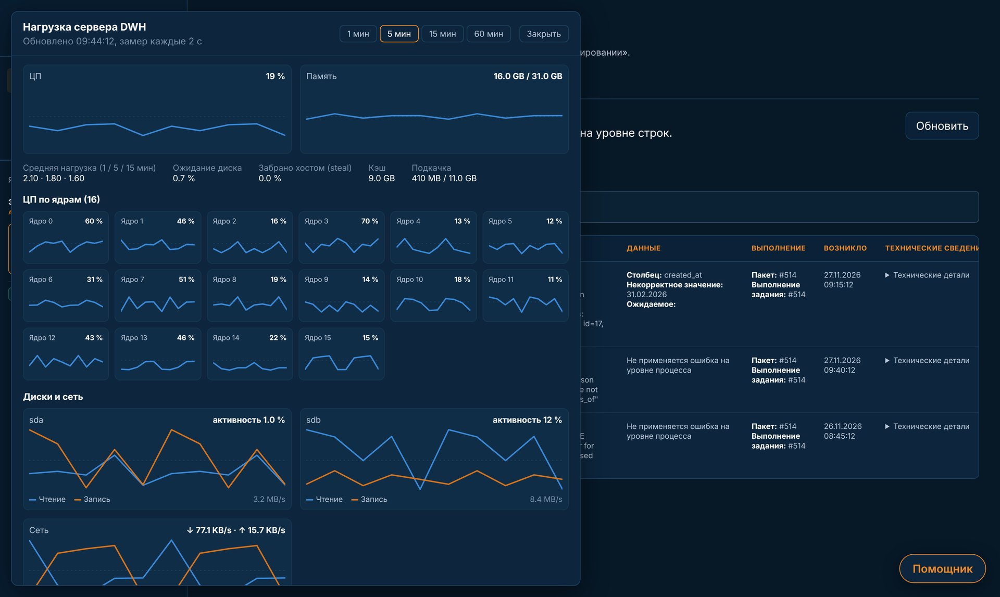
Только чтение. Пароли зашифрованы (AES-256), выдаются только выполняемой загрузке, каждое обращение записывается.
Домен по защищённому каналу, лимит попыток входа, защищённые cookie сессии, срок сессии 8 часов.
Снаружи открыты только HTTPS (TLS 1.2/1.3, сертификат внутреннего УЦ) и SSH для администрирования. Интернета на сервере нет.
Роли с минимальными правами в приложении и в базе данных; витрины открываются только по праву роли.
Модель работает внутри сервера. Запросы помощника проверяются, данные ему не передаются.
Внутренний аудит безопасности и проверка «со стороны»: серьёзных и средних слабостей не найдено.
выпуск готов и работает на сервере во внутренней сети
вида источников: базы PostgreSQL, API, файлы
серьёзных находок в проверках безопасности
Пока на тестовых данных и тестовых источниках.
Подробное устройство, адреса, порты и меры безопасности — в документе «DWH — техническое описание».